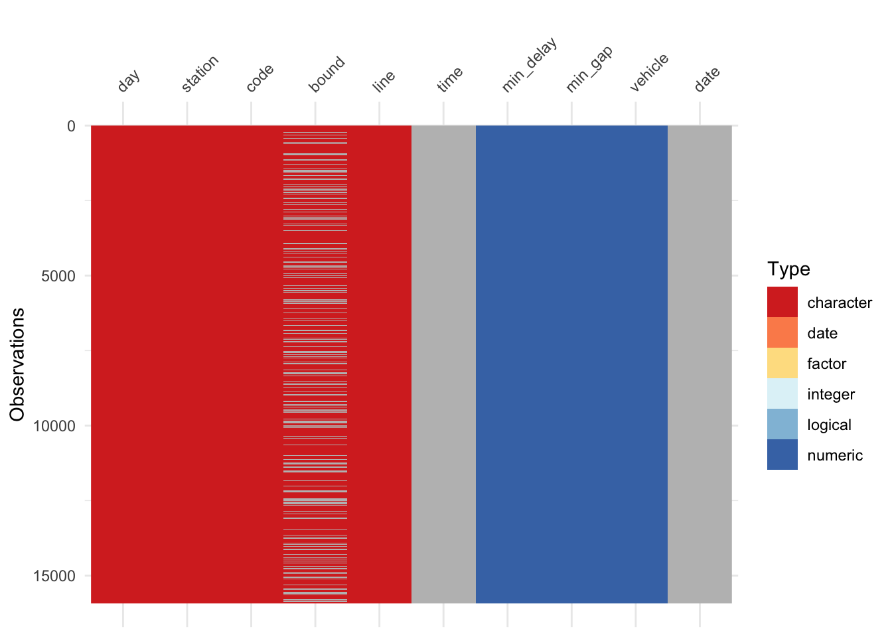
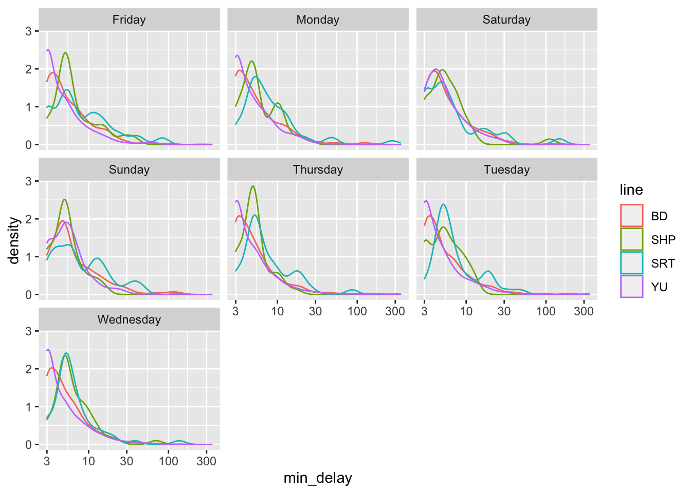
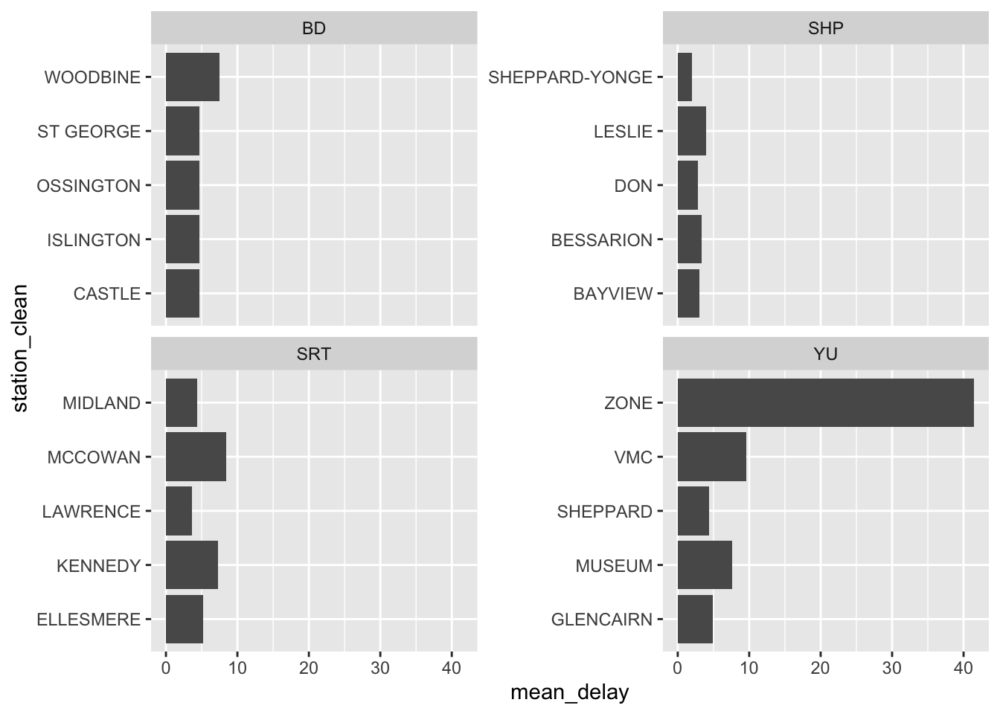
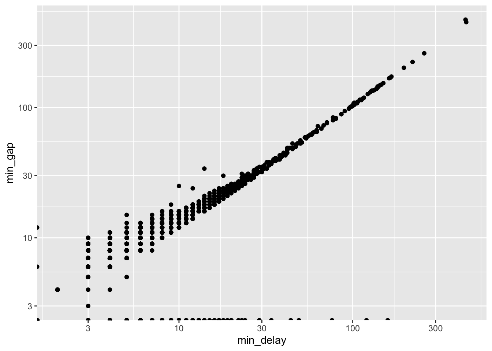
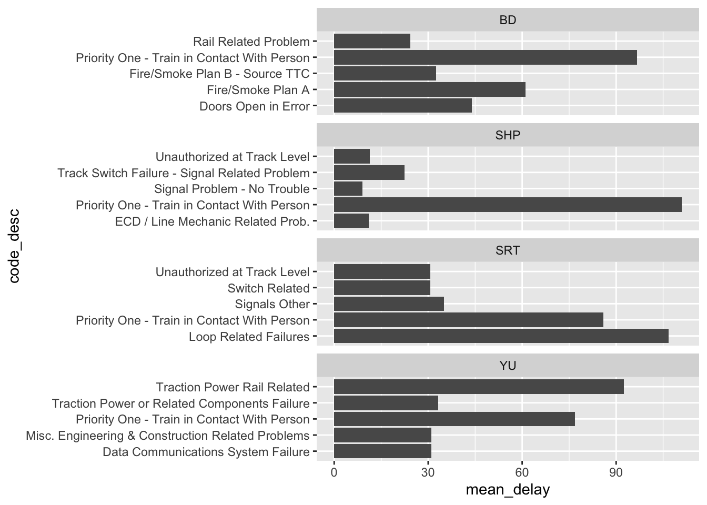
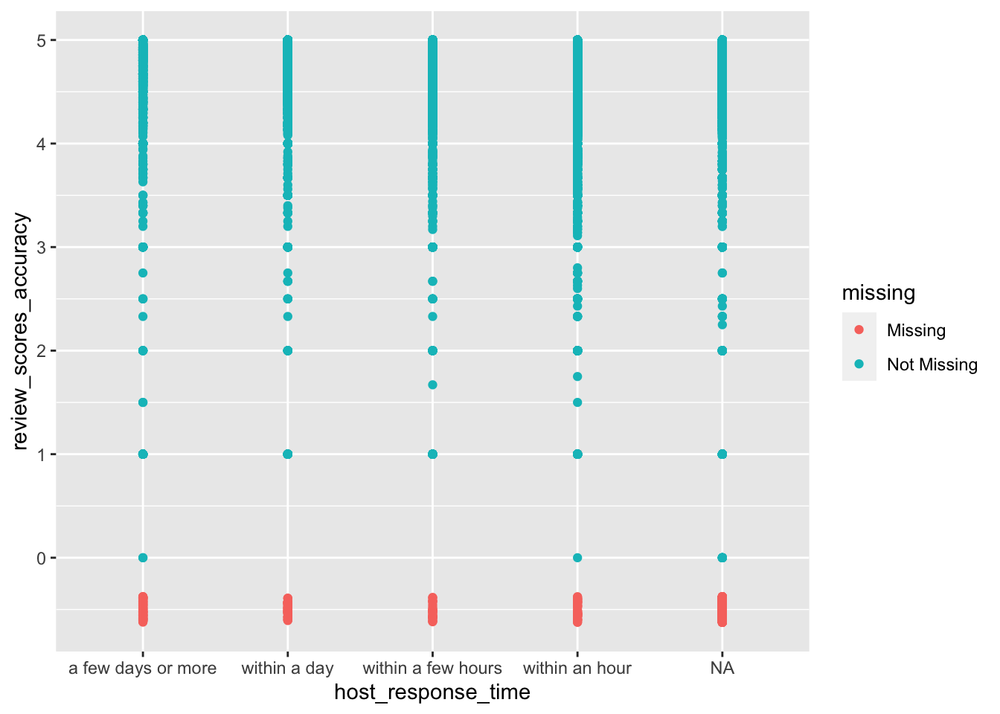
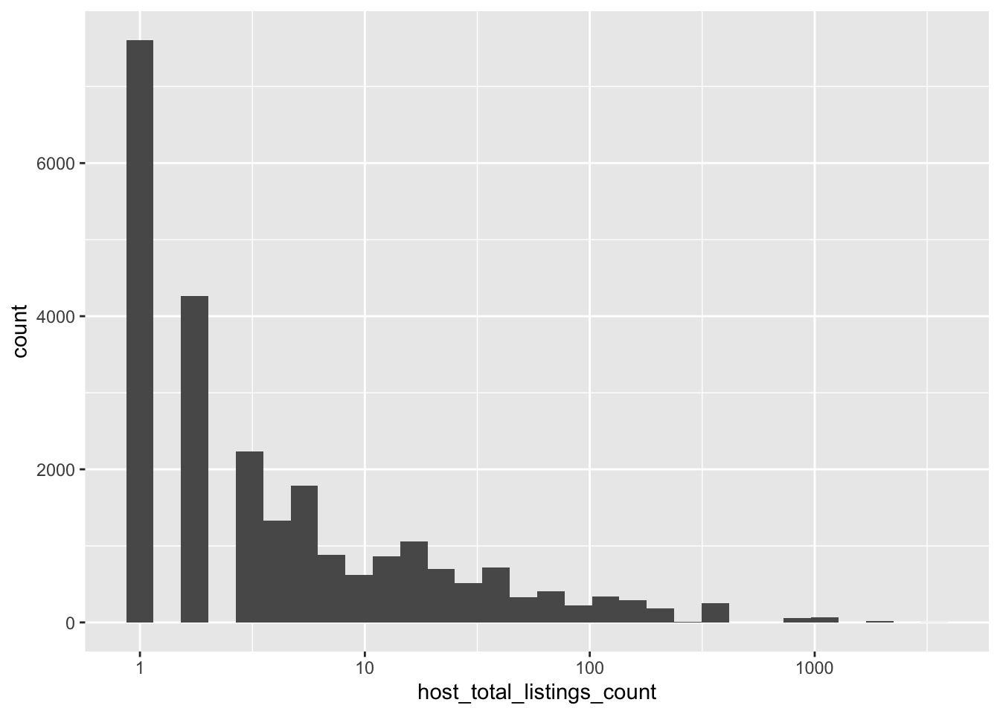
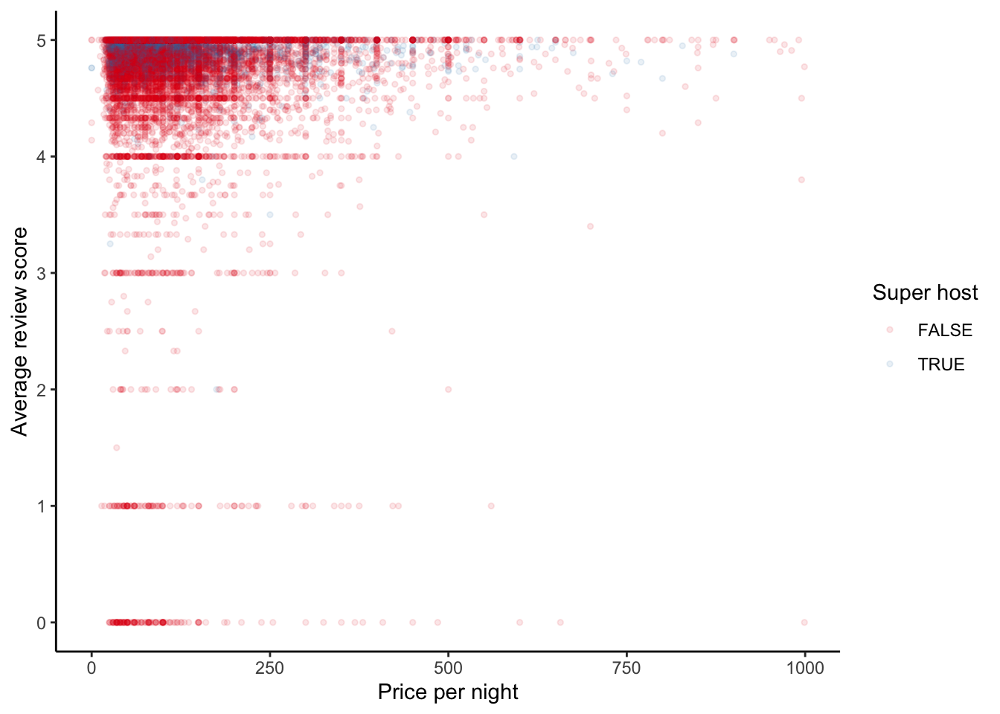

library(janitor)
library(opendatatoronto)
library(tidyverse)
all_2021_ttc_data <-
list_package_resources(
"996cfe8d-fb35-40ce-b569-698d51fc683b"
) |>
filter(name == "ttc-subway-delay-data-2021") |>
get_resource() |>
bind_rows() |>
clean_names()
write_csv(all_2021_ttc_data, "all_2021_ttc_data.csv")
all_2021_ttc_data13 Exploratory data analysis
Required material
- Read The Future of Data Analysis, Part 1 “General Considerations”, (Tukey 1962)
- Read R for Data Science, Chapter 10 “Exploratory Data Analysis”, (Wickham and Grolemund 2022)
Key concepts and skills
- Exploratory data analysis is the process of quickly coming to terms with a new dataset by constructing graphs and tables. We want to explore and understand three critical aspects: 1) individual variables; 2) individual and multiple relationships between variables; 3) considering what is not there.
- During the EDA process we want to come to understand the issues and features of the dataset and how this may affect analysis decisions. We are especially concerned about missing values and outliers.
Key packages and functions
janitor(Firke 2020)adorn_ns()adorn_pct_formatting()adorn_percentages()adorn_title()adorn_totals()clean_names()get_dupes()tabyl()
modelsummary(Arel-Bundock 2021)modelsummary()
naniar(Tierney et al. 2021)geom_miss_point()
opendatatoronto(Gelfand 2020)get_resource()list_package_resources()
tidyverse(core) (Wickham et al. 2019)dplyr(Wickham et al. 2022)add_count()ggplot2(Wickham 2016)geom_bar()geom_col()geom_density()geom_histogram()geom_point()geom_smooth()scale_x_log10()scale_y_log10()
stringr(Wickham 2019)str_detect()str_remove()str_split()str_starts()word()
tidyverse(outer) (Wickham et al. 2019)lubridate(Grolemund and Wickham 2011)week()
visdat(Tierney 2017)vis_dat()vis_miss()
13.1 Introduction
The future of data analysis can involve great progress, the overcoming of real difficulties, and the provision of a great service to all fields of science and technology. Will it? That remains to us, to our willingness to take up the rocky road of real problems in preference to the smooth road of unreal assumptions, arbitrary criteria, and abstract results without real attachments. Who is for the challenge?
Tukey (1962, 64).
Exploratory data analysis is never finished, you just die. It is the active process of exploring and becoming familiar with our data. Like a farmer with their hands in the earth, we need to know every contour and aspect of our data. We need to know how it changes, what it shows, hides, and what are its limits. Exploratory data analysis (EDA) is the unstructured process of doing this.
EDA is a means to an end. While it will inform the entire paper, especially the data section, it is not typically something that ends up in the final paper. The way to proceed is to make a separate Quarto document and add code as well as brief notes on-the-go. Do not delete previous code, just add to it. By the end of it we will have created a useful notebook that captures our exploration of the dataset. This is a document that will guide the subsequent analysis and modelling.
EDA draws on a variety of skills and there are a lot of options for EDA (Staniak and Biecek 2019). Every tool should be considered. Look at the data and scroll through it. Make tables, plots, summary statistics, even some models. The key is to iterate, move quickly rather than perfectly, and come to a thorough understanding of the data.
We are interested in coming to thoroughly understand the data that we have, which will help us understand what we do not have. We are interested in the following process:
- Understand distribution and properties of individual variables.
- Understand relationships between variables.
- Consider what is not there.
In this chapter we will go through various examples of EDA including TTC subway delays, and Airbnb.
13.2 TTC subway delays
As a first example of EDA we use opendatatoronto (Gelfand 2020), introduced in Chapter 2, and the tidyverse (Wickham et al. 2019) to obtain and explore data about the Toronto subway system. We are especially interested in getting a sense of the delays that have occurred.
To begin, we download the data on Toronto Transit Commission (TTC) subway delays in 2021. The data are available as a separate dataset for each month. We are interested in 2021, so we create a column that of the year, and then filter the resources to just those months that were in 2021. We download them using get_resource(), iterating through each month using map_dfr from purrr (Henry and Wickham 2020) which brings each of the twelve datasets together, and then save them.
The dataset has a variety of columns, and we can find out more about each of them by downloading the codebook. The reason for the delay is coded, and so we can also download the explanations. One variable of interest appears to be “min_delay”, which gives the extent of the delay in minutes.
# Data codebook
delay_codebook <-
list_package_resources(
"996cfe8d-fb35-40ce-b569-698d51fc683b") |>
filter(name == "ttc-subway-delay-data-readme") |>
get_resource() |>
clean_names()
write_csv(delay_codebook, "delay_codebook.csv")
# Explanation for delay codes
delay_codes <-
list_package_resources(
"996cfe8d-fb35-40ce-b569-698d51fc683b") |>
filter(name == "ttc-subway-delay-codes") |>
get_resource() |>
clean_names()
write_csv(delay_codes, "delay_codes.csv")There is no one way to explore a dataset while conducting EDA, but we are usually especially interested in:
- What should the variables look like? For instance, what is their type, what are the values, and what does the distribution of these look like?
- What aspects are surprising, both in terms of data that are there that we do not expect, such as outliers, but also in terms of data that we may expect here but do not have such as missing data.
- Developing a goal for our analysis. For instance, in this case, it might be understanding the factors such as stations and the time of day, that are associated with delays.
It is important to document all aspects as we go through and make note of anything surprising. We are looking to create a record of the steps and assumptions that we made as we were going because these will be important when we come to modelling.
13.2.1 Distribution and properties of individual variables
13.2.1.1 Checking data
We should check that the variables are what they say they are. If they are not, then we need to work out what to do, for instance, should we change them, or possibly even remove them? It is also important to ensure that the class of the variables is as we expect. For instance, variables that should be a factor are a factor and those that should be a character are a character. And that we do not accidentally have, say, factors as numbers, or vice versa. One way to do this is to use unique(), and another is to use table().
unique(all_2021_ttc_data$day)[1] "Friday" "Saturday" "Sunday" "Monday" "Tuesday" "Wednesday"
[7] "Thursday" unique(all_2021_ttc_data$line) [1] "YU" "BD" "SHP"
[4] "SRT" "YU/BD" NA
[7] "YONGE/UNIVERSITY/BLOOR" "YU / BD" "YUS"
[10] "999" "SHEP" "36 FINCH WEST"
[13] "YUS & BD" "YU & BD LINES" "35 JANE"
[16] "52" "41 KEELE" "YUS/BD" table(all_2021_ttc_data$day)
Friday Monday Saturday Sunday Thursday Tuesday Wednesday
2600 2434 2073 1942 2425 2481 2415 table(all_2021_ttc_data$line)
35 JANE 36 FINCH WEST 41 KEELE
1 1 1
52 999 BD
1 1 5734
SHEP SHP SRT
1 657 656
YONGE/UNIVERSITY/BLOOR YU YU / BD
1 8880 17
YU & BD LINES YU/BD YUS
1 346 18
YUS & BD YUS/BD
1 1 We have likely issues in terms of the subway lines. Some of them have a clear fix, but not all. One option would be to drop them, but we would need to think about whether these errors might be correlated with something that is of interest, because if they were then we may be dropping important information. There is usually no one right answer, because it will usually depend on what we are using the data for. We would note the issue, as we continued with EDA and then decide later about what to do. For now, we will remove all the lines that are not the ones that we know to be correct.
all_2021_ttc_data_filtered_lines <-
all_2021_ttc_data |>
filter(line %in% c("BD", "YU", "SHP", "SRT"))Exploring missing data could be a course in itself, but the presence, or lack, of missing values can haunt an analysis. To get started we could look at known-unknowns, which are the NAs for each variable. It can be useful to use vis_dat() from visdat (Tierney 2017) to get a feel for how the missing values are distributed across variables.
library(visdat)
vis_dat(x = all_2021_ttc_data_filtered_lines,
palette = "cb_safe")
In this case we have many missing values in “bound” and two in “line”. For these known-unknowns, as discussed in Chapter 8, we are interested in whether the they are missing at random. We want to, ideally, show that data happened to just drop out. This is unlikely, and so we are usually trying to look at what is systematic about how our data are missing.
Sometime data happen to be duplicated. If we did not notice this, then our analysis would be wrong in ways that we would not be able to consistently expect. There are a variety of ways to look for duplicated rows, but get_dupes() from janitor (Firke 2020) is especially useful.
get_dupes(all_2021_ttc_data_filtered_lines)No variable names specified - using all columns.# A tibble: 36 × 11
date time day station code min_d…¹ min_gap bound line
<dttm> <time> <chr> <chr> <chr> <dbl> <dbl> <chr> <chr>
1 2021-03-31 00:00:00 05:45 Wednesd… DUNDAS… MUNCA 0 0 <NA> BD
2 2021-03-31 00:00:00 05:45 Wednesd… DUNDAS… MUNCA 0 0 <NA> BD
3 2021-06-08 00:00:00 14:40 Tuesday VAUGHA… MUNOA 3 6 S YU
4 2021-06-08 00:00:00 14:40 Tuesday VAUGHA… MUNOA 3 6 S YU
5 2021-06-22 00:00:00 06:00 Tuesday TORONT… MRO 0 0 <NA> SRT
6 2021-06-22 00:00:00 06:00 Tuesday TORONT… MRO 0 0 <NA> SRT
7 2021-06-22 00:00:00 06:00 Tuesday TORONT… MUO 0 0 <NA> SHP
8 2021-06-22 00:00:00 06:00 Tuesday TORONT… MUO 0 0 <NA> SHP
9 2021-09-11 00:00:00 06:00 Saturday TORONT… MRO 0 0 <NA> SRT
10 2021-09-11 00:00:00 06:00 Saturday TORONT… MRO 0 0 <NA> SRT
# … with 26 more rows, 2 more variables: vehicle <dbl>, dupe_count <int>, and
# abbreviated variable name ¹min_delay
# ℹ Use `print(n = ...)` to see more rows, and `colnames()` to see all variable namesThis dataset has many duplicates. Again, we are interested in whether there is something systematic going on. Remembering that during EDA we are trying to quickly come to terms with a dataset, one way forward is to flag this as an issue to come back to and explore later, and to just remove duplicates for now using distinct().
all_2021_ttc_data_no_dupes <-
all_2021_ttc_data_filtered_lines |>
distinct()The station names are a mess.
all_2021_ttc_data_no_dupes |>
count(station)# A tibble: 259 × 2
station n
<chr> <int>
1 BATHURST STATION 161
2 BAY STATION 102
3 BAYVIEW STATION 91
4 BAYVIEW TO SHEPAPRD/YO 1
5 BEDFORD SUBSTATION 1
6 BESSARION STATION 39
7 BLOOR DANFORTH LINE 9
8 BLOOR DANFORTH SUBWAY 8
9 BLOOR HAYDEN ENTRANCE 1
10 BLOOR STATION 479
# … with 249 more rows
# ℹ Use `print(n = ...)` to see more rowsWe could try to quickly bring a little order to the chaos by just taking just the first word (or, the first two if it starts with “ST”). Again, we are just trying to get a sense of the data, not necessarily make binding decisions here. We use word() from stringr here to extract specific words from the station names.
all_2021_ttc_data_no_dupes <-
all_2021_ttc_data_no_dupes |>
mutate(station_clean = if_else(
str_starts(station, "ST"),
word(station, 1, 2),
word(station, 1))
)
all_2021_ttc_data_no_dupes# A tibble: 15,908 × 11
date time day station code min_d…¹ min_gap bound line
<dttm> <time> <chr> <chr> <chr> <dbl> <dbl> <chr> <chr>
1 2021-01-01 00:00:00 00:33 Friday BLOOR ST… MUPAA 0 0 N YU
2 2021-01-01 00:00:00 00:39 Friday SHERBOUR… EUCO 5 9 E BD
3 2021-01-01 00:00:00 01:07 Friday KENNEDY … EUCD 5 9 E BD
4 2021-01-01 00:00:00 01:41 Friday ST CLAIR… MUIS 0 0 <NA> YU
5 2021-01-01 00:00:00 02:04 Friday SHEPPARD… MUIS 0 0 <NA> YU
6 2021-01-01 00:00:00 02:35 Friday KENNEDY … MUIS 0 0 <NA> BD
7 2021-01-01 00:00:00 02:39 Friday VAUGHAN … MUIS 0 0 <NA> YU
8 2021-01-01 00:00:00 06:00 Friday TORONTO … MUO 0 0 <NA> YU
9 2021-01-01 00:00:00 06:00 Friday TORONTO … MUO 0 0 <NA> SHP
10 2021-01-01 00:00:00 06:00 Friday TORONTO … MRO 0 0 <NA> SRT
# … with 15,898 more rows, 2 more variables: vehicle <dbl>,
# station_clean <chr>, and abbreviated variable name ¹min_delay
# ℹ Use `print(n = ...)` to see more rows, and `colnames()` to see all variable namesWe need to see the data in its original state to understand it and we use bar charts, scatterplots, line plots and histograms extensively for this. During EDA we are not as concerned with whether the graph looks nice, but are instead trying to acquire a sense of the data as quickly as possible. We can start by looking at the distribution of “min_delay”, which is one outcome of interest.
all_2021_ttc_data_no_dupes |>
ggplot(aes(x = min_delay)) +
geom_histogram(bins = 30)
The largely empty graph suggests the presence of outliers. There are a variety of ways to try to understand what could be going on, but one quick way to proceed it to use logarithms, remembering that we would expect values of 0 to drop away.
all_2021_ttc_data_no_dupes |>
ggplot(aes(x = min_delay)) +
geom_histogram(bins = 30) +
scale_x_log10()
This initial exploration hints at an issue that we might like to explore further. We will join this dataset with “delay_codes” to understand what is going on.
all_2021_ttc_data_no_dupes <-
all_2021_ttc_data_no_dupes |>
left_join(
delay_codes |>
rename(code = sub_rmenu_code,
code_desc = code_description_3) |>
select(code, code_desc),
by = "code"
)
all_2021_ttc_data_no_dupes <-
all_2021_ttc_data_no_dupes |>
mutate(code_srt = ifelse(line == "SRT", code, "NA")) |>
left_join(
delay_codes |>
rename(code_srt = sub_rmenu_code, code_desc_srt = code_description_7) |>
select(code_srt, code_desc_srt),
by = "code_srt"
) |>
mutate(
code = ifelse(code_srt == "NA", code, code_srt),
code_desc = ifelse(is.na(code_desc_srt), code_desc, code_desc_srt)
) |>
select(-code_srt,-code_desc_srt)
all_2021_ttc_data_no_dupes# A tibble: 15,908 × 12
date time day station code min_d…¹ min_gap bound line
<dttm> <time> <chr> <chr> <chr> <dbl> <dbl> <chr> <chr>
1 2021-01-01 00:00:00 00:33 Friday BLOOR ST… MUPAA 0 0 N YU
2 2021-01-01 00:00:00 00:39 Friday SHERBOUR… EUCO 5 9 E BD
3 2021-01-01 00:00:00 01:07 Friday KENNEDY … EUCD 5 9 E BD
4 2021-01-01 00:00:00 01:41 Friday ST CLAIR… MUIS 0 0 <NA> YU
5 2021-01-01 00:00:00 02:04 Friday SHEPPARD… MUIS 0 0 <NA> YU
6 2021-01-01 00:00:00 02:35 Friday KENNEDY … MUIS 0 0 <NA> BD
7 2021-01-01 00:00:00 02:39 Friday VAUGHAN … MUIS 0 0 <NA> YU
8 2021-01-01 00:00:00 06:00 Friday TORONTO … MUO 0 0 <NA> YU
9 2021-01-01 00:00:00 06:00 Friday TORONTO … MUO 0 0 <NA> SHP
10 2021-01-01 00:00:00 06:00 Friday TORONTO … MRO 0 0 <NA> SRT
# … with 15,898 more rows, 3 more variables: vehicle <dbl>,
# station_clean <chr>, code_desc <chr>, and abbreviated variable name
# ¹min_delay
# ℹ Use `print(n = ...)` to see more rows, and `colnames()` to see all variable namesAnd so we can see that the 450 minute delay was due to “Transit Control Related Problems”, the 446 minute delay was due to “Miscellaneous Other”, they seem to be outliers, even among the outliers.
all_2021_ttc_data_no_dupes |>
left_join(delay_codes |>
rename(code = sub_rmenu_code, code_desc = code_description_3) |>
select(code, code_desc)) |>
arrange(-min_delay) |>
select(date, time, station, line, min_delay, code, code_desc)Joining, by = c("code", "code_desc")# A tibble: 15,908 × 7
date time station line min_de…¹ code code_…²
<dttm> <time> <chr> <chr> <dbl> <chr> <chr>
1 2021-06-29 00:00:00 10:21 MUSEUM STATION YU 348 PUTTP Tracti…
2 2021-10-12 00:00:00 12:03 EGLINTON STATION YU 343 PUSTC Signal…
3 2021-08-05 00:00:00 20:32 WOODBINE STATION BD 312 MUO Miscel…
4 2021-05-24 00:00:00 05:48 MCCOWAN STATION SRT 275 PRSL <NA>
5 2021-04-30 00:00:00 06:15 SHEPPARD WEST STATION YU 255 PUTWZ Work Z…
6 2021-01-05 00:00:00 13:02 ISLINGTON STATION BD 207 MUPR1 Priori…
7 2021-05-13 00:00:00 08:23 SHEPPARD WEST STATION YU 191 MUPR1 Priori…
8 2021-05-04 00:00:00 15:56 ROYAL YORK STATION BD 182 SUAP Assaul…
9 2021-05-27 00:00:00 13:08 ROYAL YORK STATION BD 180 MUPR1 Priori…
10 2021-11-18 00:00:00 16:39 SHEPPARD STATION YU 171 MUPR1 Priori…
# … with 15,898 more rows, and abbreviated variable names ¹min_delay,
# ²code_desc
# ℹ Use `print(n = ...)` to see more rows13.2.1.2 Groups of small counts
Another thing that we are looking for is various groupings of the data, especially where sub-groups may end up with only a small number of observations in them. This is because any analysis could be especially influenced by them. One quick way to do this is to group the data by a variable that is of interest, for instance, “line”, using color.
all_2021_ttc_data_no_dupes |>
ggplot() +
geom_histogram(aes(x = min_delay,
y = ..density..,
fill = line),
position = "dodge",
bins = 10) +
scale_x_log10()
Figure 13.1 uses density so that we can look at the distributions more comparably, but we should also be aware of differences in frequency (Figure 13.2). In this case, we will see that “SHP” and “SRT” have much smaller counts.
all_2021_ttc_data_no_dupes |>
ggplot() +
geom_histogram(aes(x = min_delay, fill = line),
position = "dodge",
bins = 10) +
scale_x_log10()
To group by another variable, we can add facets (Figure 13.3).
all_2021_ttc_data_no_dupes |>
ggplot() +
geom_density(aes(x = min_delay, color = line),
bw = .08) +
scale_x_log10() +
facet_wrap(vars(day))
We can now plot the top five stations by mean delay.
all_2021_ttc_data_no_dupes |>
group_by(line, station_clean) |>
summarise(mean_delay = mean(min_delay), n_obs = n()) |>
filter(n_obs>1) |>
arrange(line, -mean_delay) |>
slice(1:5) |>
ggplot(aes(station_clean, mean_delay)) +
geom_col() +
coord_flip() +
facet_wrap(vars(line),
scales = "free_y")`summarise()` has grouped output by 'line'. You can override using the
`.groups` argument.
13.2.1.3 Dates
As discussed in Chapter 11 dates are often difficult to work with because they are so prone to having issues. For this reason, it is especially important to consider them during EDA. We could create a graph by week, to see if there is any seasonality. When using dates, lubridate (Grolemund and Wickham 2011) is especially useful. For instance, we can look at the average delay, of those that were delayed, by week, using week() to construct the weeks (Figure 13.4).
library(lubridate)
all_2021_ttc_data_no_dupes |>
filter(min_delay > 0) |>
mutate(week = week(date)) |>
group_by(week, line) |>
summarise(mean_delay = mean(min_delay)) |>
ggplot(aes(week, mean_delay, color = line)) +
geom_point() +
geom_smooth() +
facet_wrap(vars(line),
scales = "free_y"
)
Now let us look at the proportion of delays that were greater than 10 minutes (Figure 13.5).
all_2021_ttc_data_no_dupes |>
mutate(week = week(date)) |>
group_by(week, line) |>
summarise(prop_delay = sum(min_delay>10)/n()) |>
ggplot(aes(week, prop_delay, color = line)) +
geom_point() +
geom_smooth() +
facet_wrap(vars(line),
scales = "free_y"
)
These figures, tables, and analysis have no place in a final paper. Instead, they allow us to become comfortable with the data. We note aspects about each that stand out, as well as the warnings and any implications or aspects to return to.
13.2.2 Relationships between variables
We are also interested in looking at the relationship between two variables. Scatter plots are especially useful here for continuous variables, and are a good precursor to modeling. For instance, we may be interested in the relationship between the delay and the gap (Figure 13.6).
all_2021_ttc_data_no_dupes |>
ggplot(aes(x = min_delay, y = min_gap)) +
geom_point() +
scale_x_log10() +
scale_y_log10()
The relationship between categorical variables takes more work, but we could also, for instance, look at the top five reasons for delay by station. We may be interested in whether they differ, and how any difference could be modeled (Figure 13.7).
all_2021_ttc_data_no_dupes |>
group_by(line, code_desc) |>
summarise(mean_delay = mean(min_delay)) |>
arrange(-mean_delay) |>
slice(1:5) |>
ggplot(aes(x = code_desc,
y = mean_delay)) +
geom_col() +
facet_wrap(vars(line),
scales = "free_y",
nrow = 4) +
coord_flip()
13.3 Airbnb listings in London
In this case study we look at Airbnb listings in London as at 7 June 2022. The dataset is from Inside Airbnb (Cox 2021) and we will read it from their website, and then save a local copy. We can give read_csv() a link to where the dataset is and it will download it. This helps with reproducibility because the source is clear. But, as that link could change at any time, longer-term reproducibility, as well as wanting to minimize the effect on the Inside Airbnb servers, suggests that we should also save a local copy of the data and then use that.
To get the dataset that we need, go to Inside Airbnb, -> “Data” -> “Get the Data”, then scroll down to London. We are interested in the listings dataset, and we right click to get the URL that we need (Figure 13.8). Inside Airbnb update the data that they make available, and so the particular dataset that you are able to download may be different.

As the original data is not ours, we should not make that public without first getting written permission. The “guess_max” option in read_csv() helps us avoid having to specify the column types. Usually read_csv() takes a best guess at the column types based on the first few rows. But sometimes those first ones are misleading and so “guess_max” forces it to look at a larger number of rows to try to work out what is going on. Paste the URL that we copied into the IRL part.
library(tidyverse)
url <-
paste0("http://data.insideairbnb.com/united-kingdom/england/",
"london/2022-06-07/data/listings.csv.gz"
)
airbnb_data <-
read_csv(
file = url,
guess_max = 20000)
write_csv(airbnb_data, "airbnb_data.csv")
airbnb_dataIt is extremely important that we refer to this local copy of our data when run our scripts to explore the data, rather than asking the Inside Airbnb servers for the data each time.
13.3.1 Distribution and properties of individual variables
There are many columns, so we will just select a few.
names(airbnb_data) |>
length()[1] 74airbnb_data_selected <-
airbnb_data |>
select(host_id,
host_since,
host_response_time,
host_is_superhost,
host_listings_count,
host_total_listings_count,
host_neighbourhood,
host_listings_count,
neighbourhood_cleansed,
room_type,
bathrooms,
bedrooms,
price,
number_of_reviews,
has_availability,
review_scores_rating,
review_scores_accuracy,
review_scores_cleanliness,
review_scores_checkin,
review_scores_communication,
review_scores_location,
review_scores_value
)
airbnb_data_selected# A tibble: 66,152 × 21
host_id host_since host_res…¹ host_…² host_…³ host_…⁴ host_…⁵ neigh…⁶ room_…⁷
<dbl> <date> <chr> <lgl> <dbl> <dbl> <chr> <chr> <chr>
1 54730 2009-11-16 within a … FALSE 3 3 LB of … Isling… Privat…
2 60302 2009-12-05 a few day… FALSE 1 1 Chelsea Kensin… Entire…
3 41759 2009-09-28 within a … FALSE 1 1 Batter… Wandsw… Entire…
4 67915 2010-01-05 within a … FALSE 3 3 Fulham Hammer… Privat…
5 67564 2010-01-04 within a … FALSE 18 18 Fitzro… Westmi… Entire…
6 103583 2010-04-05 N/A FALSE 3 3 LB of … Barnet Privat…
7 155938 2010-06-30 within a … TRUE 1 1 LB of … Richmo… Entire…
8 144444 2010-06-14 within a … FALSE 2 2 LB of … Hounsl… Privat…
9 134606 2010-05-29 within a … FALSE 1 1 LB of … Newham Privat…
10 157884 2010-07-04 within a … FALSE 4 4 LB of … Haring… Privat…
# … with 66,142 more rows, 12 more variables: bathrooms <lgl>, bedrooms <dbl>,
# price <chr>, number_of_reviews <dbl>, has_availability <lgl>,
# review_scores_rating <dbl>, review_scores_accuracy <dbl>,
# review_scores_cleanliness <dbl>, review_scores_checkin <dbl>,
# review_scores_communication <dbl>, review_scores_location <dbl>,
# review_scores_value <dbl>, and abbreviated variable names
# ¹host_response_time, ²host_is_superhost, ³host_listings_count, …
# ℹ Use `print(n = ...)` to see more rows, and `colnames()` to see all variable namesFirst we might be interested in price. It is a character at the moment and so we need to convert it to a numeric. This is a common problem, and we need to be a little careful that it does not all just convert to NAs. In our case if we just force the price data to be a numeric then it will go to NA because there are a lot of characters where it is unclear what the numeric equivalent is, such as “$”. So we need to remove those characters first.
airbnb_data_selected$price |> head()[1] "$49.00" "$75.00" "$195.00" "$160.00" "$379.00" "$29.00" airbnb_data_selected$price |> str_split("") |> unlist() |> unique() [1] "$" "4" "9" "." "0" "7" "5" "1" "6" "3" "2" "8" ","airbnb_data_selected |>
select(price) |>
filter(str_detect(price, ","))# A tibble: 976 × 1
price
<chr>
1 $1,000.00
2 $1,500.00
3 $1,071.00
4 $2,000.00
5 $1,150.00
6 $1,000.00
7 $1,100.00
8 $2,211.00
9 $5,000.00
10 $5,500.00
# … with 966 more rows
# ℹ Use `print(n = ...)` to see more rowsairbnb_data_selected <-
airbnb_data_selected |>
mutate(price = str_remove(price, "\\$"),
price = str_remove(price, ","),
price = as.integer(price)
)Now we can have a look at the distribution of prices (Figure 13.9 (a)). There are outliers, so again we might like to consider it on the log scale (Figure 13.9 (b)).
airbnb_data_selected |>
ggplot(aes(x = price)) +
geom_histogram(binwidth = 10) +
theme_classic() +
labs(x = "Price per night",
y = "Number of properties")
airbnb_data_selected |>
filter(price > 1000) |>
ggplot(aes(x = price)) +
geom_histogram(binwidth = 10) +
theme_classic() +
labs(x = "Price per night",
y = "Number of properties") +
scale_y_log10()

If we focus on prices that are less than $1,000 then we see that most properties have a nightly price less than $250 (Figure 13.10 (a)). Interestingly it looks like there is some bunching of prices, possible around numbers ending in zero or nine. Let us just zoom in on prices between $90 and $210, out of interest, but change the bins to be smaller (Figure 13.10 (b)).
airbnb_data_selected |>
filter(price < 1000) |>
ggplot(aes(x = price)) +
geom_histogram(binwidth = 10) +
theme_classic() +
labs(x = "Price per night",
y = "Number of properties")
airbnb_data_selected |>
filter(price > 90) |>
filter(price < 210) |>
ggplot(aes(x = price)) +
geom_histogram(binwidth = 1) +
theme_classic() +
labs(x = "Price per night",
y = "Number of properties")

For now, we will just remove all prices that are more than $999.
airbnb_data_less_1000 <-
airbnb_data_selected |>
filter(price < 1000)Superhosts are especially experienced Airbnb hosts, and we might be interested to learn more about them. For instance, a host either is or is not a superhost, and so we would not expect any NAs. But we can see that there are. It might be that the host removed a listing or similar. For now, we will remove them.
airbnb_data_less_1000 |>
filter(is.na(host_is_superhost))# A tibble: 6 × 21
host_id host_since host_res…¹ host_…² host_…³ host_…⁴ host_…⁵ neigh…⁶ room_…⁷
<dbl> <date> <chr> <lgl> <dbl> <dbl> <chr> <chr> <chr>
1 8317501 NA <NA> NA NA NA <NA> Tower … Privat…
2 22047056 NA <NA> NA NA NA <NA> Westmi… Privat…
3 39828462 NA <NA> NA NA NA <NA> Tower … Privat…
4 43023101 NA <NA> NA NA NA <NA> Waltha… Privat…
5 44815642 NA <NA> NA NA NA <NA> Camden Privat…
6 79411714 NA <NA> NA NA NA <NA> Brent Entire…
# … with 12 more variables: bathrooms <lgl>, bedrooms <dbl>, price <int>,
# number_of_reviews <dbl>, has_availability <lgl>,
# review_scores_rating <dbl>, review_scores_accuracy <dbl>,
# review_scores_cleanliness <dbl>, review_scores_checkin <dbl>,
# review_scores_communication <dbl>, review_scores_location <dbl>,
# review_scores_value <dbl>, and abbreviated variable names
# ¹host_response_time, ²host_is_superhost, ³host_listings_count, …
# ℹ Use `colnames()` to see all variable namesWe will also want to create a binary variable from this. It is true/false at the moment, which is fine for the modelling, but there are a handful of situations where it will be easier if we have a 0/1. And for now we will just remove anyone with an NA for whether they are a super host.
airbnb_data_less_1000 <-
airbnb_data_less_1000 |>
filter(!is.na(host_is_superhost)) |>
mutate(host_is_superhost_binary = if_else(
host_is_superhost == TRUE, 1, 0)
)On Airbnb, guests can give 1-5 star ratings across a variety of different aspects, including cleanliness, accuracy, value, and others. But when we look at the reviews in our dataset, it is less clear how this is being constructed, because it appears to be a rating between 20 and 100 and there are also NA values (Figure 13.11).
airbnb_data_less_1000 |>
ggplot(aes(x = review_scores_rating)) +
geom_bar() +
theme_classic() +
labs(x = "Reviews scores rating",
y = "Number of properties")
We would like to deal with the NAs in “review_scores_rating”, but this is more complicated as there are a lot of them. It may be that this is just because they do not have any reviews.
airbnb_data_less_1000 |>
filter(is.na(review_scores_rating)) |>
nrow()[1] 16577airbnb_data_less_1000 |>
filter(is.na(review_scores_rating)) |>
select(number_of_reviews) |>
table()
0
16577 So these properties do not have a review rating yet because they do not have enough reviews. It is a large proportion of the total, at almost a fifth of them so we might like to look at this in more detail using vis_miss() from visdat (Tierney 2017). We are interested to see whether there is something systematic happening with these properties. For instance, if the NAs were being driven by, say, some requirement of a minimum number of reviews, then we would expect they would all be missing.
library(visdat)
airbnb_data_less_1000 |>
select(review_scores_rating,
review_scores_accuracy,
review_scores_cleanliness,
review_scores_checkin,
review_scores_communication,
review_scores_location,
review_scores_value) |>
vis_miss()
Given it looks convincing that in almost all cases, the different types of reviews are missing for the same observation. One approach would be to just focus on those that are not missing and the main review score (Figure 13.12).
airbnb_data_less_1000 |>
filter(!is.na(review_scores_rating)) |>
ggplot(aes(x = review_scores_rating)) +
geom_histogram(binwidth = 1) +
theme_classic() +
labs(x = "Average review score",
y = "Number of properties")
For now, we will remove anyone with an NA in their main review score, even though this will remove roughly 20 per cent of observations. If we ended up using this dataset for actual analysis, then we would want to justify this decision in an appendix or similar.
airbnb_data_has_reviews <-
airbnb_data_less_1000 |>
filter(!is.na(review_scores_rating))Another important factor is how quickly a host responds to an inquiry. Airbnb allows hosts up to 24 hours to respond, but encourages responses within an hour.
airbnb_data_has_reviews |>
count(host_response_time)# A tibble: 5 × 2
host_response_time n
<chr> <int>
1 a few days or more 1170
2 N/A 18831
3 within a day 4401
4 within a few hours 6318
5 within an hour 17873It is unclear a host could have a response time of NA. It may be that they are related to some other variable. Interestingly it seems like what looks like “NAs” in “host_response_time” variable are not coded as proper NAs, but are instead being treated as another category. We will recode them to be actual NAs and change the variable to be a factor.
airbnb_data_has_reviews <-
airbnb_data_has_reviews |>
mutate(host_response_time = if_else(host_response_time == "N/A",
NA_character_,
host_response_time),
host_response_time = factor(host_response_time)
)There is clearly an issue with NAs as there are a lot of them. For instance, we might be interested to see if there is a relationship with the review score (Figure 13.13). There are a lot that have an overall review of 100.
airbnb_data_has_reviews |>
filter(is.na(host_response_time)) |>
ggplot(aes(x = review_scores_rating)) +
geom_histogram(binwidth = 1) +
theme_classic() +
labs(x = "Average review score",
y = "Number of properties")
Usually missing values are dropped by ggplot2. We can use geom_miss_point() from naniar (Tierney et al. 2021) to include them in the graph (Figure 13.14).
library(naniar)
airbnb_data_has_reviews |>
ggplot(aes(x = host_response_time,
y = review_scores_accuracy)) +
geom_miss_point()
For now, we will remove anyone with a NA in their response time. This will again removes roughly another 20 per cent of the observations.
airbnb_data_selected <-
airbnb_data_has_reviews |>
filter(!is.na(host_response_time))There are two versions of a variable that suggest how many properties a host has on Airbnb. We might be interested to know whether there is a difference between them.
airbnb_data_selected |>
mutate(listings_count_is_same = if_else(host_listings_count == host_total_listings_count, 1, 0)) |>
filter(listings_count_is_same == 0)# A tibble: 0 × 23
# … with 23 variables: host_id <dbl>, host_since <date>,
# host_response_time <fct>, host_is_superhost <lgl>,
# host_listings_count <dbl>, host_total_listings_count <dbl>,
# host_neighbourhood <chr>, neighbourhood_cleansed <chr>, room_type <chr>,
# bathrooms <lgl>, bedrooms <dbl>, price <int>, number_of_reviews <dbl>,
# has_availability <lgl>, review_scores_rating <dbl>,
# review_scores_accuracy <dbl>, review_scores_cleanliness <dbl>, …
# ℹ Use `colnames()` to see all variable namesAs there are no differences in this dataset, we can just remove one variable for now and have a look at the other one (Figure 13.15).
airbnb_data_selected <-
airbnb_data_selected |>
select(-host_listings_count)
airbnb_data_selected |>
ggplot(aes(x = host_total_listings_count)) +
geom_histogram() +
scale_x_log10()
There are a large number who have somewhere in the 2-10 properties range, but the usual long tail. The number with many listings is unexpected and worth following up on. And there are a bunch with NA that we will need to deal with.
airbnb_data_selected |>
filter(host_total_listings_count >= 10) |>
head()# A tibble: 6 × 21
host_id host_since host_resp…¹ host_…² host_…³ host_…⁴ neigh…⁵ room_…⁶ bathr…⁷
<dbl> <date> <fct> <lgl> <dbl> <chr> <chr> <chr> <lgl>
1 67564 2010-01-04 within a f… FALSE 18 Fitzro… Westmi… Entire… NA
2 54987 2009-11-17 within an … FALSE 39 Isle o… Tower … Entire… NA
3 381894 2011-02-08 within a f… FALSE 24 Wimble… Merton Entire… NA
4 67564 2010-01-04 within a f… FALSE 18 Fitzro… Camden Entire… NA
5 381894 2011-02-08 within a f… FALSE 24 Wimble… Merton Entire… NA
6 381894 2011-02-08 within a f… FALSE 24 Wimble… Hounsl… Entire… NA
# … with 12 more variables: bedrooms <dbl>, price <int>,
# number_of_reviews <dbl>, has_availability <lgl>,
# review_scores_rating <dbl>, review_scores_accuracy <dbl>,
# review_scores_cleanliness <dbl>, review_scores_checkin <dbl>,
# review_scores_communication <dbl>, review_scores_location <dbl>,
# review_scores_value <dbl>, host_is_superhost_binary <dbl>, and abbreviated
# variable names ¹host_response_time, ²host_is_superhost, …
# ℹ Use `colnames()` to see all variable namesThere is nothing that immediately jumps out as odd about the people with more than 10 listings, but there must be something going on. For now, we will focus on only those with one property.
airbnb_data_selected <-
airbnb_data_selected |>
add_count(host_id) |>
filter(n == 1) |>
select(-n)13.3.2 Relationships between variables
We might like to make some graphs to see if there are any relationships that become clear. Some aspects that come to mind is looking at prices and reviews and super hosts, and number of properties and neighborhood.
Look at the relationship between price and reviews, and whether they are a super-host (Figure 13.16).
airbnb_data_selected |>
ggplot(aes(x = price, y = review_scores_rating, color = host_is_superhost)) +
geom_point(size = 1, alpha = 0.1) +
theme_classic() +
labs(x = "Price per night",
y = "Average review score",
color = "Super host") +
scale_color_brewer(palette = "Set1")
One of the aspects that may make someone a super host is how quickly they respond to inquiries. One could imagine that being a superhost involves quickly saying yes or no to inquiries. Let us look at the data. First, we want to look at the possible values of superhost by their response times.
airbnb_data_selected |>
count(host_is_superhost) |>
mutate(proportion = n / sum(n),
proportion = round(proportion, digits = 2))# A tibble: 2 × 3
host_is_superhost n proportion
<lgl> <int> <dbl>
1 FALSE 10298 0.82
2 TRUE 2249 0.18Fortunately, it looks like when we removed the reviews rows we removed any NAs from whether they were a super host, but if we go back and look into that we may need to check again. We could build a table that looks at a hosts response time by whether they are a superhost using tabyl() from janitor (Firke 2020). It is clear that is a host does not respond within an hour then it is unlikely that they are a super host.
airbnb_data_selected |>
tabyl(host_response_time, host_is_superhost) |>
adorn_percentages("row") |>
adorn_pct_formatting(digits = 0) |>
adorn_ns() |>
adorn_title() host_is_superhost
host_response_time FALSE TRUE
a few days or more 99% (747) 1% (4)
within a day 90% (2321) 10% (248)
within a few hours 83% (2623) 17% (547)
within an hour 76% (4607) 24% (1450)Finally, we could look at neighborhood. The data provider has attempted to clean the neighborhood variable for us, so will just use that variable for now. Although if we ended up using this variable for our actual analysis we would want to check they had not made any errors.
airbnb_data_selected |>
tabyl(neighbourhood_cleansed) |>
adorn_totals("row") |>
adorn_pct_formatting() |>
nrow()[1] 34airbnb_data_selected |>
tabyl(neighbourhood_cleansed) |>
adorn_pct_formatting() |>
arrange(-n) |>
filter(n > 100) |>
adorn_totals("row") |>
head() neighbourhood_cleansed n percent
Hackney 992 7.9%
Westminster 835 6.7%
Tower Hamlets 825 6.6%
Southwark 790 6.3%
Lambeth 748 6.0%
Wandsworth 717 5.7%We will now run some models on our dataset. We will cover modeling in more detail in Chapter 14, but we can use models during EDA to help get a better sense of relationships that may exist between multiple variables in a dataset. For instance, we may like to see whether we can forecast whether someone is a super host, and the factors that go into explaining that. As the dependent variable is binary, this is a good opportunity to use logistic regression. We expect that better reviews will be associated with faster responses and higher reviews. Specifically, the model that we estimate is:
\[\mbox{Prob(Is super host} = 1) = \beta_0 + \beta_1 \mbox{Response time} + \beta_2 \mbox{Reviews} + \epsilon\]
We estimate the model using glm in the R language (R Core Team 2022).
logistic_reg_superhost_response_review <-
glm(host_is_superhost ~
host_response_time +
review_scores_rating,
data = airbnb_data_selected,
family = binomial
)We can have a quick look at the results using modelsummary() from modelsummary (Arel-Bundock 2021)
library(modelsummary)
modelsummary(logistic_reg_superhost_response_review)| Model 1 | |
|---|---|
| (Intercept) | −14.087 |
| (0.798) | |
| host_response_timewithin a day | 2.748 |
| (0.506) | |
| host_response_timewithin a few hours | 3.409 |
| (0.503) | |
| host_response_timewithin an hour | 3.873 |
| (0.502) | |
| review_scores_rating | 1.880 |
| (0.128) | |
| Num.Obs. | 12547 |
| AIC | 10915.4 |
| BIC | 10952.6 |
| Log.Lik. | −5452.693 |
| F | 123.703 |
| RMSE | 0.37 |
13.4 Exercises and tutorial
Exercises
- (Plan) Consider the following scenario: TBD. Please sketch out what that dataset could look like and then sketch a graph that you could build to show all observations.
- (Simulate) Please further consider the scenario described and simulate the situation with every variable independent of each other.
- (Acquire) Please describe three possible sources of such a dataset.
- (Explore) Please use
ggplot2to build the graph that you sketched. - (Communicate) Please write two paragraphs about what you did.
- In your own words what is exploratory data analysis (this will be difficult, but please write only one nuanced paragraph)?
- In Tukey’s words, what is exploratory data analysis (please write one paragraph)?
- Who was Tukey (please write a paragraph or two)?
- If you have a dataset called “my_data”, which has two columns: “first_col” and “second_col”, then could you please write some rough R code that would generate a graph (the type of graph does not matter).
- Consider a dataset that has 500 rows and 3 columns, so there are 1,500 cells. If 100 of the cells are missing data for at least one of the columns, then would you remove the whole row your dataset or try to run your analysis on the data as is, or some other procedure? What if your dataset had 10,000 rows instead, but the same number of missing cells?
- Please note three ways of identifying unusual values.
- What is the difference between a categorical and continuous variable?
- What is the difference between a factor and an integer variable?
- How can we think about who is systematically excluded from a dataset?
- Using
opendatatoronto, download the data on mayoral campaign contributions for 2014. (Note: the 2014 file you will get fromget_resource(), so just keep the sheet that relates to the Mayor election).- Clean up the data format (fixing the parsing issue and standardizing the column names using
janitor) - Summarize the variables in the dataset. Are there missing values, and if so, should we be worried about them? Is every variable in the format it should be? If not, create new variable(s) that are in the right format.
- Visually explore the distribution of values of the contributions. What contributions are notable outliers? Do they share a similar characteristic(s)? It may be useful to plot the distribution of contributions without these outliers to get a better sense of most of the data.
- List the top five candidates in each of these categories: 1) total contributions; 2) mean contribution; and 3) number of contributions.
- Repeat that process, but without contributions from the candidates themselves.
- How many contributors gave money to more than one candidate?
- Clean up the data format (fixing the parsing issue and standardizing the column names using
- Name three geoms that produce graphs that have bars on them
ggplot(). - Consider a dataset 10,000 observations and 27 variables. For each observation, there is at least one missing variable. Please discuss, in a paragraph or two, the steps that you would take to understand what is going on.
- Known missing data, are those that leave holes in your dataset. But what about data that were never collected? Please look at McClelland (2019) and Luscombe and McClelland (2020). Look into how they gathered their dataset and what it took to put this together. What is in the dataset and why? What is missing and why? How could this affect the results? How might similar biases enter into other datasets that you have used or read about?
Tutorial
Redo the Airbnb EDA but for Paris. Please submit a PDF.